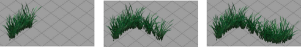

通过对“最大片段”(Max Clip)值设定关键帧，您可以对绘制的（或显示的）笔划路径设定动画。

以下步骤只描述了其中一种设定关键帧的方法。有关其他方法，请参见 Maya 中的动画。
对绘制的（或显示的）笔划设定关键帧
- 单击“自动关键帧切换”(Auto keyframe toggle)（Maya 主窗口右下角的关键帧图标），并移动到第一帧。
- 选择要设定动画的笔划。
- 在“属性编辑器”(Attribute Editor)中，单击 strokeShape 选项卡并扩大“结束边界”(End Bounds)。
- 在“最小片段”(Min Clip)和“最大片段”(Max Clip)方框上单击鼠标右键并选择“设置关键帧”(Set Key)。
- 将“最小片段”(Min Clip)和“最大片段”(Max Clip)值设定为 0。
- 移动到最后一帧，并将“最大片段”(Max Clip)值设定为 1。
- 在场景视图中单击“向前播放”(Play Forward)按钮，以检查动画是否正按照您要求的方式进行运作。
- 渲染动画。请参见使用“Paint Effects”笔划渲染场景。
注：
通过对“最小片段”(Min Clip)值和“最大片段”(Max Clip)值的不同排列设定关键帧，您可以获得其他效果。例如，您可以逐步对笔划设定动画，或从笔划起始端开始渐渐消失，或从笔划两端开始渐渐消失。